1 Overview
This post is a recreation of my undergraduate final year electronics project from 1984. Of course the technology available today, would have looked like pure science fiction back then, even if one had the imagination! The post describes a simulated continuous-wave (CW) proton NMR spectrometer built around a marginal oscillator: a JFET Hartley oscillator whose tank inductor is also the sample coil, run just above the threshold of oscillation. When the protons in the sample absorb RF energy, the tank loses Q, and the oscillation amplitude falls. A diode detector picks up that drop, an audio preamplifier amplifies it, and the result is shown on an oscilloscope or recovered with a lock-in amplifier.
The project contains two independent implementations of the same physics; all the files are in src/nmr_hartley (see Section 9):
| File | Role |
|---|---|
nmr_marginal_osc_sim.m |
Stand-alone script (base MATLAB, fixed-step RK4). Produces fig1–fig3. |
nmr_params.m |
Parameter set for the Simulink model; runs as its PreLoadFcn/InitFcn. |
build_nmr_model.m |
Builds nmr_marginal_osc.slx programmatically. |
nmr_marginal_osc.slx |
System-level Simulink model (ode45). |
verify_nmr_model.m |
Runs the model in all three modes, compares with the script, saves simulink_check.png and diagram images. |
The model works at the system level. It does not simulate the JFET transistor by transistor at 20 MHz, which would take \(\sim10^6\) RF cycles per modulation period. Instead it uses the averaged (slowly varying envelope) equation for the oscillator amplitude, coupled to a set of Bloch equations in the rotating frame. That is accurate whenever the envelope changes slowly compared with the RF period, which holds here by many orders of magnitude.
2 Physics of the measurement
2.1 Protons in a magnetic field
A proton has spin ½ and a magnetic moment \(\boldsymbol\mu=\gamma\hbar\mathbf I\), with gyromagnetic ratio
\[ \frac{\gamma}{2\pi}=42.577\ \text{MHz/T}. \]
In a static field \(B_0\hat z\) the magnetisation precesses at the Larmor frequency \(\omega_L=\gamma B_0\). For an oscillator frequency \(f_0 = 20\) MHz, resonance happens at
\[ B_\text{res}=\frac{2\pi f_0}{\gamma}=0.46974\ \text{T}. \]
In thermal equilibrium the sample has a small net magnetisation given by Curie’s law,
\[ M_0=\frac{\chi_0 B_0}{\mu_0},\qquad \chi_0\approx 4\times10^{-9}\ \text{(protons in water, SI)}. \]
2.2 Bloch equations in the rotating frame
The coil produces a linearly polarised RF field \(2B_1\cos\omega_0 t\,\hat x\). This splits into two counter-rotating components of amplitude \(B_1\), and only the one rotating with the spins matters. In a frame rotating at \(\omega_0\), with magnetisation normalised to \(M_0\) (\(m = M/M_0\)) and offset \(\Delta=\gamma B_z-\omega_0\), the Bloch equations become
\[ \begin{aligned} \dot m_x &= \Delta\, m_y - \frac{m_x}{T_2},\\ \dot m_y &= -\Delta\, m_x + \omega_1 m_z - \frac{m_y}{T_2},\\ \dot m_z &= -\omega_1 m_y - \frac{m_z-1}{T_1}, \end{aligned} \qquad \omega_1=\gamma B_1 . \tag{1}\]
\(m_x\) is the dispersion component (in phase with \(B_1\)) and \(m_y\) is the absorption component (in quadrature, so it extracts energy). With a constant \(\Delta\) the steady state is
\[ m_y=\frac{\omega_1T_2}{1+\Delta^2T_2^2+s},\qquad m_x=\Delta T_2\, m_y,\qquad s=\omega_1^2T_1T_2 , \]
where \(s\) is the saturation parameter. The sample is doped with CuSO4 to make it relax quickly: \(T_1=2\) ms and \(T_2=1\) ms. That gives a homogeneous width of \(1/(\pi T_2)=318\) Hz FWHM, which is 7.5 µT in field.
2.3 Complex susceptibility
Linear-response theory relates the absorption component to the imaginary part of the RF susceptibility, \(\chi=\chi'-i\chi''\):
\[ \chi''=\frac{\mu_0 M_v}{2B_1} =\frac{\chi_0 B_\text{res}\, m_y}{2B_1} \;\xrightarrow{\text{steady state}}\; \frac{\chi_0\,\omega_0T_2}{2}\,\frac{1}{1+\Delta^2T_2^2+s}. \tag{2}\]
With the model parameters (\(B_1 = 1\) µT at the operating level, so \(\omega_1 = 267.5\) s−1 and \(s = 0.143\)), the peak value is \(\chi''_\text{pk}=2.2\times10^{-4}\). This is about 55 000 times larger than \(\chi_0\), because the factor \(\omega_0 T_2\) is large.
2.4 Magnet inhomogeneity: the isochromat ensemble
A real magnet is not uniform across the sample. The model represents the field spread as a Gaussian with \(\sigma_B = 5\) µT (11.8 µT FWHM, 501 Hz). The spread is sampled by \(N\) isochromats: sub-ensembles at fixed field offsets \(\delta B_k\in[-4\sigma_B,4\sigma_B]\) with Gaussian weights \(w_k\). Each one obeys Equation 1 with its own
\[ \Delta_k=\gamma\left(B_\text{res}+B_\text{ext}(t)+\delta B_k\right)-\omega_0 , \]
and the measured absorption is the weighted sum \(M_v\propto\sum_k w_k m_{y,k}\). In steady state the result is a Voigt line (a Lorentzian convolved with a Gaussian). The isochromats are also needed for transient effects: wiggles, passage distortion and dephasing all come from them, and a single Lorentzian cannot reproduce these.
2.5 Field modulation and passage regimes
\(B_\text{ext}(t)\) is the sum of a slow offset or sweep from the magnet supply and a sinusoidal modulation field from a pair of Helmholtz coils:
\[ B_\text{ext}(t)=B_\text{off}+\dot B_\text{sw}\,t+B_\text{mod}\sin(2\pi f_m t). \]
The model runs in two very different regimes:
- Scope mode (\(f_m = 100\) Hz, \(B_\text{mod} = 50\) µT). The modulation sweeps far across the whole line twice per period, at up to \(2\pi f_m B_\text{mod}=31\) mT/s. The line (about 12 µT wide) is crossed in about 0.3–0.4 ms, which is shorter than \(T_2\), so the spins are in the intermediate passage regime. The response lags and is distorted, and it is not the steady-state lineshape. On the oscilloscope the result is two absorption “blips” per modulation period.
- Lock-in mode (\(f_m = 200\) Hz, \(B_\text{mod} = 1.5\) µT \(\ll\) linewidth, with a slow ±30 µT sweep over 1.5 s). The modulation probes a small part of the line, and the first harmonic of the response is proportional to \(B_\text{mod}\,\partial\chi''/\partial B\). So the lock-in records the derivative of the absorption line.
2.5.1 Interactive model: spins in a swept field
The model below integrates Equation 1 live for nine isochromats spread across the field distribution, with the modulation sweeping the field through resonance. In the rotating frame, each isochromat precesses about the effective field \(\mathbf B_\text{eff}=(B_1,0,\Delta/\gamma)\). Far from resonance \(\mathbf B_\text{eff}\) is almost parallel to \(B_0\) and the magnetisation stays near the pole. As the sweep passes resonance, \(\mathbf B_\text{eff}\) swings towards \(B_1\), \(\mathbf M\) tips over, and \(m_y\) shows the absorption blip that loads the tank. Afterwards the isochromats fan out (dephasing from the inhomogeneity) while \(T_1\) restores \(m_z\). Raising \(B_1\) shows saturation, and moving the field offset bunches the blips towards one end of the sweep, as in the off-resonance scope trace. Time and field are scaled so the motion is visible.
3 The electronic circuit
The spectrometer has three parts. The RF head is the oscillator, sample coil and detector. The modulation chain is a two-channel generator, a voltage-to-current driver and Helmholtz coils with a current-sense resistor (Section 4). The signal chain is the preamp, oscilloscope and lock-in (Figure 1). All schematics are drawn with TikZ/circuitikz. The sources are in circuits/*.tex.
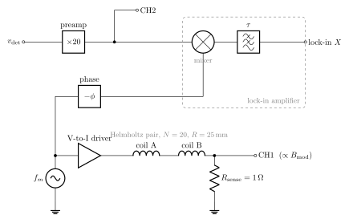
3.1 JFET Hartley oscillator
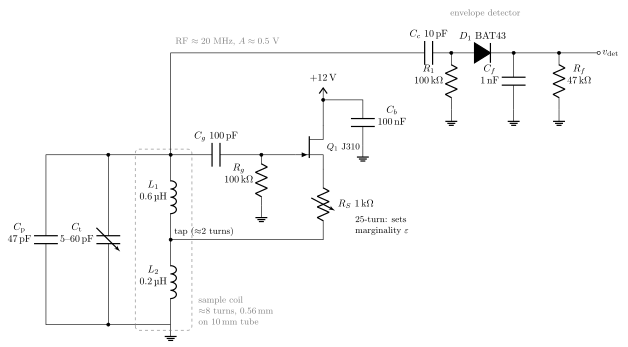
The detector couples to the top of the tank through \(C_c\). \(R_1\) gives the diode a DC return path. \(D_1\) charges \(C_f\) to the RF peak, and \(R_f C_f\) is chosen long compared with the 50 ns RF period but short compared with the passage time (about 0.3 ms), so that \(v_\mathrm{det}\) follows the envelope \(A(t)\). With \(R_f = 47\) kΩ and \(C_f = 1\) nF, \(R_fC_f = 47\) µs.
The tank is the sample coil \(L = L_1 + L_2 + 2M\) in parallel with a tuning capacitor \(C\):
\[ f_0=\frac{1}{2\pi\sqrt{LC}}\approx 20\ \text{MHz}. \]
Choosing the tank values. A coil of about 8 turns of 0.56 mm enamelled wire on a 10 mm sample tube gives \(L\approx0.8\) µH. (Wheeler’s formula, with radius 5.5 mm and length 5 mm.) The labels \(L_1 \approx 0.6\) µH and \(L_2 \approx 0.2\) µH give each section’s share of that total, with the tap about 2 turns from the grounded end. 20 MHz then needs \(C = 1/(\omega_0^2L) \approx 79\) pF. The 47 pF padder \(C_\mathrm{p}\), the 5–60 pF trimmer \(C_\mathrm{t}\) and roughly 10 pF of stray capacitance together give 62–117 pF. That tunes from about 16.4 MHz to 22.6 MHz, so 20 MHz is near the middle of the range.
The parallel loss resistance is \(R_p = Q_0\omega_0L \approx 8\) kΩ. The detector’s 100 kΩ load lowers Q by about 8 %, and this loading is already included in the model’s \(Q_0\). The gate-leak time constant \(R_gC_g = 10\) µs is about the same as the amplitude relaxation time \(\tau_A\). Keeping it this short avoids squegging, which is self-pulsing of the amplitude.
The JFET is a source follower with its source connected to the coil tap. The tap ratio \(n\approx L_2/L\) sets how much of the source current is fed back into the tank. A source follower has voltage gain just under 1 and the tap gives a \(1/n\) voltage step-up, so the loop gain is enough to sustain oscillation. The gate-leak network \(C_g R_g\) rectifies on positive peaks. This develops a negative bias that lowers \(g_m\) as the amplitude grows, and that is the gain-compression mechanism that sets the amplitude.
3.2 Why “marginal”
Let \(R_p=Q\omega_0L\) be the tank’s parallel loss resistance and \(G(v)\) the amplitude-dependent transconductance the JFET presents to the tank. Oscillation needs \(G R_p\ge 1\). A marginal oscillator is set (with \(R_S\), or a drain-supply potentiometer) so that
\[ G_1R_p=1+\varepsilon,\qquad \varepsilon\ll 1 , \]
where \(G_1\) is the small-signal value. Close to threshold, the steady amplitude depends strongly on the loss. A small change in \(R_p\) gives a large change in amplitude, and this is the oscillator’s detection gain. Taking \(\varepsilon\) smaller increases sensitivity but also increases noise and the risk that the oscillator stops. The model uses \(\varepsilon = 0.05\).
3.3 How the spins load the tank
The spins change the coil inductance to \(L(1+\eta\chi)\), where \(\eta = 0.6\) is the filling factor. The impedance gains a term \(\omega_0 L\eta\chi''\) in series, which is a resistance, so
\[ \frac1Q=\frac1{Q_0}+\eta\chi''. \]
The dispersion part \(\chi'\) pulls the frequency by \(-\tfrac12\eta\chi'\omega_0\). The model holds \(\omega_0\) fixed and ignores this (see Section 7).
3.4 Averaged amplitude equation
Model the tank voltage as \(v\), with the active device injecting a cubic current \(i = G_1v - G_3v^3\). This is a van der Pol oscillator. Write \(v = A(t)\cos(\omega_0t+\phi)\) and average over one RF cycle (Krylov–Bogoliubov). Using \(1/(R_pC)=\omega_0/Q_0\), this gives
\[ \dot A=\frac{\omega_0}{2Q_0}\left(\varepsilon-\frac{A^2}{A_s^2}\right)A -\frac{\omega_0}{2}\,\eta\chi''A, \qquad A_s^2=\frac{4}{3G_3R_p}. \tag{3}\]
- With no spins, \(A_0=A_s\sqrt\varepsilon\). The model sets \(A_0 = 0.5\) V at the detector.
- Linearising about \(A_0\) gives a relaxation time \(\tau_A = Q_0/(\omega_0\varepsilon)=12.7\) µs. The amplitude follows the spins almost instantly, but this time constant still makes the ODE system stiff.
- For a small, slowly varying \(\chi''\):
\[ \frac{\Delta A}{A_0}\approx-\frac{Q_0\,\eta\,\chi''}{2\varepsilon}. \tag{4}\]
The factor \(1/(2\varepsilon)=10\) is the “marginal gain”. With the homogeneous peak value of \(\chi''\), Equation 4 predicts a 10.5 % dip. That is an upper bound. Inhomogeneous broadening and the fast passage reduce the simulated dip to about 5.8 %.
The RF amplitude also sets \(B_1\). The model uses \(B_1=k_{B1}A\) with \(k_{B1}\) = 1 µT per 0.5 V, so the oscillator level directly controls how much the spins saturate. This two-way coupling, from \(A\) to \(\omega_1\) to \(m_y\) to \(\chi''\) and back to \(A\), is the core of the model.
3.5 Detector, preamplifier and noise
- Diode envelope detector. Treated as ideal, so its output is \(A(t)\). The DC level \(A_0\) is subtracted, which is what a DC-blocking capacitor does.
- Detector noise. White noise, 2 mV rms referred to the detector within the preamp bandwidth.
- Audio preamp. Gain \(G_\text{pre} = 20\), two identical 1 kHz low-pass poles, and 2 Hz AC coupling.
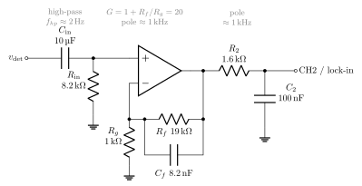
Figure 3 shows one way to build the preamp the model assumes:
- \(C_\mathrm{in}R_\mathrm{in}\) gives \(1/(2\pi\cdot8.2\,\text{k}\Omega\cdot10\,\mu\text{F})=1.9\) Hz, which is the
AC couplingblock. - The gain is \(1+R_f/R_g=20\), which is
P.Gpre. - \(R_fC_f\) puts a pole at 1.02 kHz. Strictly, the gain falls toward 1 rather than 0 above the pole, but that makes no difference in the audio band.
- \(R_2C_2\) gives the second pole at 0.99 kHz.
Together these match conv([1/(2*pi*P.flp) 1],[1/(2*pi*P.flp) 1]) in the model.
The noise source is specified within the preamp bandwidth. For two cascaded first-order poles the equivalent noise bandwidth is \(\text{ENBW}=\pi f_c/4\). The per-sample standard deviation of the discrete white noise is therefore
\[ \sigma_w=v_n\sqrt{\frac{f_s}{2\,\text{ENBW}}}=16\ \text{mV}\ (f_s=100\ \text{kHz}), \]
and the Simulink Band-Limited White Noise block gets Cov \(=\sigma_w^2T_s\).
3.6 Modulation coils and the scope channels
A Helmholtz pair (N = 20 turns, R = 25 mm) gives a field at the centre of
\[ B=\left(\tfrac45\right)^{3/2}\frac{\mu_0NI}{R}=k_\text{coil}I,\qquad k_\text{coil}=7.19\times10^{-4}\ \text{T/A}. \]
So 50 µT needs 69.6 mA peak. A 1 Ω sense resistor in series turns this into CH1, 69.6 mV peak, which is in phase with the field. CH2 is the preamp output.
- YT display. On resonance (\(B_\text{off}=0\)) the line is crossed at each zero of the modulation, so the blips are evenly spaced 5 ms apart. With a +20 µT offset, resonance happens where \(\sin(2\pi f_mt)=-0.4\), so the blips pair up around the negative peak of the modulation.
- XY display. CH1 on X and CH2 on Y. The upward and downward sweeps trace separate curves for two reasons:
- the two-pole preamp lag, \(2\arctan(f_m/f_c)=11.4°\) (0.32 ms) at 100 Hz;
- the lag of the spins themselves in intermediate passage.
3.7 Lock-in amplifier
- The reference is \(2\sin(2\pi f_mt-\phi)\), in phase with the coil current. The preamp lag \(\phi=2\arctan(f_m/f_c)=22.6°\) at 200 Hz is subtracted.
- The mixer output goes through a two-pole low-pass filter with \(\tau = 20\) ms per pole.
- The output is proportional to \(\partial A/\partial B\). Because the amplitude dips on resonance, this is \(-\partial\chi''/\partial B\): negative below resonance and positive above it.
4 Magnet and field control
The model needs two fields. The first is a static \(B_0\approx0.47\) T. The second is a small, controllable addition \(B_\text{off}+\dot B_\text{sw}t+B_\text{mod}\sin 2\pi f_mt\) of tens of µT. These come from different hardware.
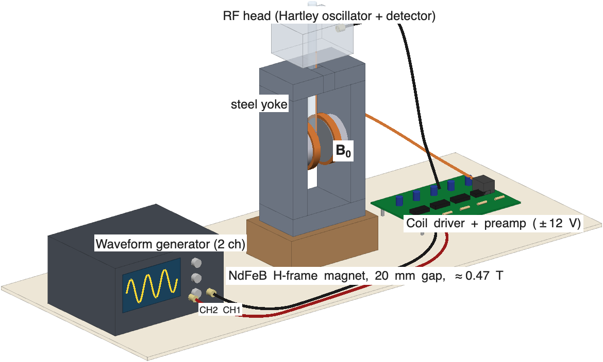
render_setup_3d.m.
4.1 Permanent magnet for \(B_0\)
0.47 T would need about 26 000 ampere-turns from air coils. A permanent magnet is the practical choice:
- Magnets. Two N42–N52 NdFeB discs, Ø50 × 15 mm, magnetised through the thickness, with opposite poles facing across the gap.
- Yoke. A mild-steel H-frame: 20 mm side plates and top and bottom bars, 60 mm deep. It gives the flux a low-reluctance return path. The calculation in Section 4.2 shows it raises the gap field from 0.26 T to 0.45 T, and keeps the steel at about 1.2 T, below saturation.
- Pole caps. 5 mm soft-iron discs, Ø50, on the magnet faces, each with a raised Rose rim 1.5 mm high and 2 mm wide around its edge. Iron smooths out the magnetisation variations of the NdFeB. The rim pushes field back into the edge of the gap, where it would otherwise sag, and makes the field about 20 times more uniform (Section 4.2). Face the caps flat and parallel.
- Gap. 20 mm between the cap faces, so 17 mm between the rims. An ideal magnetic circuit with no leakage would give \(B\approx B_r\,2t_m/(2t_m+g)\approx0.8\) T. Flux leaking around the magnets lowers this to the calculated 0.42 T, so \(f_0\) = 18.0 MHz, inside the oscillator’s tuning range.
- Sample access. A 16 mm hole in the top bar lets the sample tube drop in vertically. The RF coil axis, and so \(B_1\), is then vertical, which is perpendicular to \(B_0\) as it must be (Figure 5).
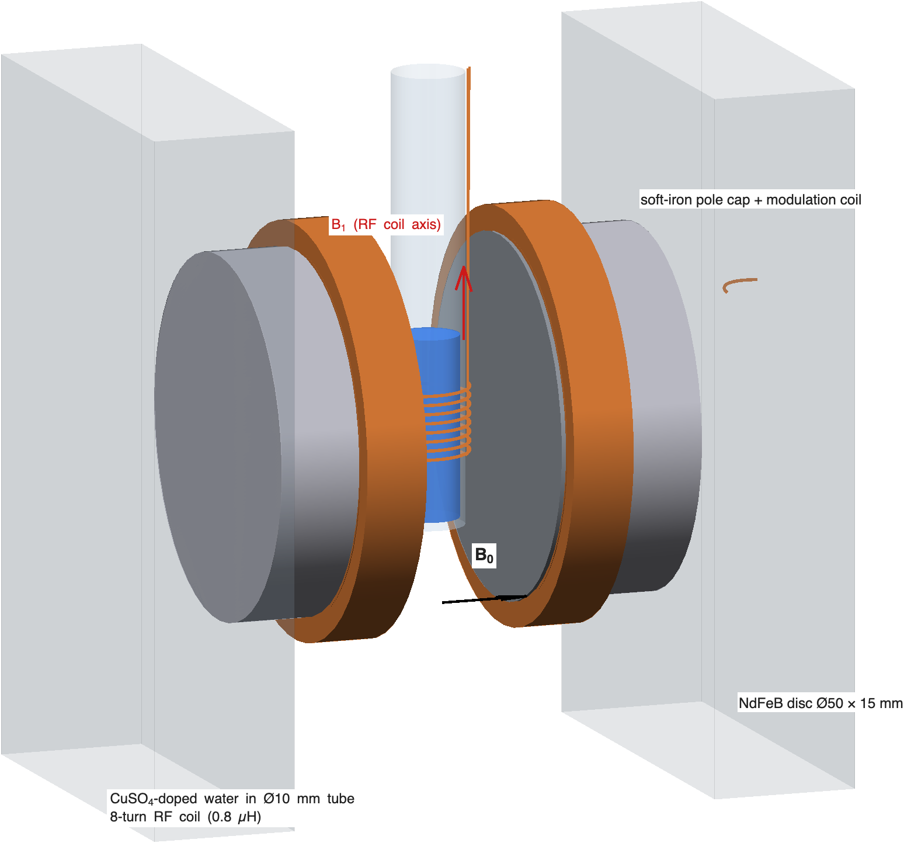
The magnet behaves differently from the model’s ideal field in three ways:
- The field is whatever the magnet gives. Measure it once with a Hall probe (RS has no affordable DC gaussmeter, see Section 8), then set \(f_0=\gamma B_0/2\pi\) with the trimmer. The tank tunes from 16.4 to 22.6 MHz, which covers 0.385–0.53 T. A frequency counter on the RF then gives \(B_0\) to better than 1 ppm.
- Temperature. NdFeB changes by about −0.11 %/K. At 0.47 T that is −0.5 mT/K, which moves the line by about 22 kHz per kelvin. Wrap the magnet in foam, let it settle, and track the line with the trimmer or the generator’s DC offset.
- Homogeneity. With flat Ø50 caps the field varies by about 3000 ppm across a Ø10 × 10 mm sample (\(\sigma\approx\) 280 µT, compared with 5 µT in the model). That would make the line about 60 times wider and the signal correspondingly weaker. The Rose rim is therefore essential. The final adjustment is still done by experiment (Section 4.2).
Large NdFeB discs snap together with crushing force. Assemble the magnet with non-magnetic spacers and slide the parts into place, never letting them jump.
4.2 Calculating the field
To check the field level and its uniformity, magnet_fd3d.m solves the 3D magnetostatic problem on a 0.5–1 mm grid, using base MATLAB only. It uses the reduced scalar potential \(u=\mu_0\varphi\), with \(\mathbf B=-\mu_r\nabla u+\mathbf B_r\):
\[ \nabla\cdot(\mu_r\nabla u)=\nabla\cdot\mathbf B_r . \]
- Materials. NdFeB with \(\mu_r=1.05\) and \(B_r=1.3\) T (N42), steel with \(\mu_r=1000\) (linear), and air.
- Discretisation. The potential is stored at cell centres. Neighbouring cells are coupled through the harmonic mean of their permeabilities, and the remanence term at each face is \(\mu_f(B_{rL}/2\mu_L+B_{rR}/2\mu_R)\), which comes from treating the two half-cells as in series.
- Symmetry. The model computes one eighth of the magnet: \(u=0\) on the mid-plane between the poles, mirror planes at \(y=0\) and \(z=0\), and \(u=0\) on an outer box. Moving the box from 40 mm to 120 mm outside the steel changes \(B_0\) by less than 0.01 %.
- Solver. Preconditioned conjugate gradients with an incomplete-Cholesky preconditioner. 1 mm runs take a few seconds and 0.5 mm runs about a minute.
- Validation. The solver matches a 1D magnet/steel circuit exactly (0.7639 T in both). For two bare Ø50 discs it is within 1.6 % of the exact on-axis formula. Halving the grid from 1 mm to 0.5 mm changes \(B_0\) by 0.5 % and the peak-to-peak uniformity by about 10 %.
magnet_design.m runs the validation, the gap sweep and the design comparison, and produces Figure 6 and Table 1.
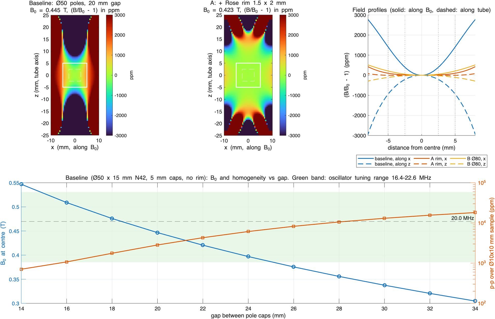
| Design | Sample | \(B_0\) (T) | \(f_0\) (MHz) | p-p (ppm) | \(\sigma\) (µT) | steel (T) |
|---|---|---|---|---|---|---|
| Baseline: Ø50 flat caps, 20 mm gap | Ø10 × 10 | 0.445 | 18.93 | 3160 | 276 | 1.16 |
| Ø5 × 5 | 0.445 | 18.93 | 671 | 66 | 1.16 | |
| A: + Rose rim 1.5 × 2 mm | Ø10 × 10 | 0.423 | 18.01 | 164 | 9.2 | 1.18 |
| Ø5 × 5 | 0.423 | 18.01 | 18 | 1.6 | 1.18 | |
| B: Ø80 flat caps, 30 mm yoke, 22 mm gap | Ø10 × 10 | 0.507 | 21.60 | 390 | 38 | 1.15 |
| Ø5 × 5 | 0.507 | 21.60 | 86 | 9.6 | 1.15 |
What the calculation shows:
- The field level is right. A 20 mm gap gives 0.42–0.45 T, which is 18–19 MHz and inside the tuning range. There is no need to widen the gap. Narrowing it to 16 mm would raise the field to 0.51 T.
- Flat Ø50 caps are not uniform enough. The pole diameter is only 2.5 times the gap. The field rises toward the poles along \(B_0\) and falls toward the edge of the gap along the tube, which is the saddle shape in Figure 6. Over Ø10 × 10 mm that gives \(\sigma\approx\) 280 µT.
- The Rose rim is the cheapest fix. A 1.5 × 2 mm rim brings the variation down to 164 ppm (\(\sigma\approx\) 9 µT), close to the model’s 5 µT. With a Ø5 mm sample it drops to 18 ppm. Larger Ø80 magnets (design B) also help, but cost more and need a thicker yoke, and are still worse than the rimmed Ø50 caps.
- The optimum is sharp. A 1.0 × 2 mm rim gives 1300 ppm, and the grid resolves only 0.5 mm steps. Treat the 1.5 × 2 mm rim as the starting point, then adjust by experiment. Machine the rim slightly high, measure the line width (with the oscillator signal, or by watching the wiggles in the YT trace), and skim the rim down in about 0.1 mm steps until the line is narrowest. Commercial permanent magnets are shimmed in the same way.
The model ignores several things: steel saturation (the steel is assumed linear), the sample hole in the top bar, variation in the magnets’ remanence, and mechanical tolerances. In a real magnet, misalignment of the pole faces by more than about 0.05 mm, or a 1 % mismatch between the two magnets, adds tilt and gradient terms of a few hundred ppm. These can be reduced by shimming, or electrically with small gradient coils.
4.2.1 Interactive model: the Rose rim
The 3D model below shows the magnet at its design dimensions: Ø50 × 15 mm NdFeB discs, 5 mm soft-iron caps with the 1.5 × 2 mm Rose rim, a 20 mm gap and the H-frame yoke, with the sample tube and RF coil in the gap. Switching the rim off restores the flat caps. The green ellipsoid marks the region where the calculated field is within ±50 ppm of the centre value: about ±0.9 × ±1.3 mm for flat caps and ±4 × ±7 mm with the rim. The chart plots the finite-difference profiles from magnet_design_results.mat through the gap centre, along \(B_0\) or along the tube. The field-line curvature in the 3D view is schematic.
4.3 Modulation, offset and sweep coils
The Helmholtz pair is wound directly on the pole caps: 20 turns of 0.56 mm wire each, radius about 26 mm, with centres about 25 mm apart. That spacing is roughly the Helmholtz condition (spacing = radius). One pair does three jobs:
| Field term | Model | Coil current |
|---|---|---|
| modulation \(B_\text{mod}\sin2\pi f_mt\) | 50 µT (scope) / 1.5 µT (lock-in) | 70 mA / 2 mA peak |
| offset \(B_\text{off}\) | 0 / +20 µT | 0 / 28 mA DC |
| sweep \(\dot B_\text{sw}t\) | ±30 µT in 1.5 s | ±42 mA ramp |
The iron pole caps act like magnetic mirrors, so the coil constant in the magnet is larger than the free-space \(k_\text{coil}=0.72\) mT/A. Calibrate it using the spins themselves:
- Centre the blips with the generator’s DC offset.
- Change the oscillator frequency by a measured \(\Delta f\).
- Re-centre with an offset change \(\Delta V\).
Then the field per volt is \((2\pi\Delta f/\gamma)/\Delta V\), which is 23.5 µT per kHz of frequency shift divided by \(\Delta V\).
4.4 Voltage-to-current coil driver
The coils have to pass DC, so an AC-coupled audio amplifier cannot drive them. The driver in Figure 7 is DC-coupled and controls current, not voltage:
- U3A sums the generator’s modulation (CH1) and sweep/offset (CH2) outputs and scales them by −0.1.
- U3B with the BD139/BD140 push-pull pair forces the current through the coils so that the voltage across the 1 Ω sense resistor equals \(v_1\). The result is \(I = v_1/R_\text{sense}\): 100 mA per volt from the generator.
- Feedback cancels the push-pull crossover distortion and the coils’ L/R phase shift. The voltage across \(R_\text{sense}\) is therefore an exact copy of the field, and that is what the model’s CH1 assumes.
- \(C_c\) (1 nF) keeps the loop stable with the inductive load.
Limit the DC current to about ±150 mA, which gives roughly ±100 µT. At that current a transistor dissipates up to about 1.8 W, so give each one a small clip-on heatsink. Swapping the coil leads reverses the sign of the field.
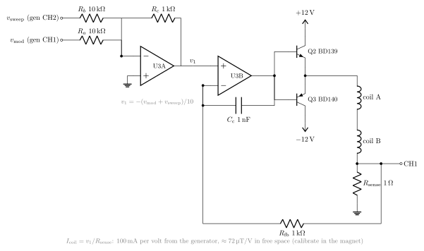
4.5 Waveform generator
A two-channel function or arbitrary-waveform generator supplies everything:
| Mode | CH1 → driver \(v_\text{mod}\) | CH2 → driver \(v_\text{sweep}\) | Reference |
|---|---|---|---|
| Scope, on resonance | sine 100 Hz, about 0.7 V pk (about 50 µT) | DC offset to centre the blips | CH1 sync → scope trigger |
| Lock-in | sine 200 Hz, about 20 mV pk (about 1.5 µT) | ramp, 1.5 s, ±0.4 V (about ±30 µT) | CH1 sync → lock-in reference |
The values in µT assume the free-space coil constant. Use the calibrated value from the procedure above.
Any two-channel DDS bench generator with DC offset and a sync output will do this. A sound card will not, because it cannot output DC. The lock-in amplifier itself is optional: digitise CH2 and the sync signal with a USB scope or DAQ, then mix and filter in MATLAB exactly as nmr_marginal_osc_sim.m does.
4.6 Finding the resonance
- Measure \(B_0\) with the Hall probe and set the oscillator near \(\gamma B_0/2\pi\), checking with the frequency counter.
- Turn RS down until the oscillator only just runs, with a small, steady RF amplitude.
- Apply large modulation (100 Hz, 100–200 µT). Slowly tune Ct while watching CH2 for blips.
- Use the CH2 DC offset to make the blips evenly spaced (Figure 10). You are then on resonance.
- For a lock-in spectrum, reduce the modulation to about 1–2 µT, switch CH2 to a slow ramp, and record the lock-in output against the ramp.
5 MATLAB implementation
5.1 Parameters: nmr_params.m
All parameters are in one struct P. The script is attached to the model as PreLoadFcn and InitFcn, so it runs again every time the model is simulated. It picks the operating mode from the base-workspace variable nmr_mode:
nmr_mode = 'scope'; % 100 Hz, 50 uT, on resonance (default)
nmr_mode = 'scope_off'; % same, B0 offset +20 uT
nmr_mode = 'lockin'; % 200 Hz, 1.5 uT, slow ±30 uT sweep in 1.5 s
sim('nmr_marginal_osc')The main blocks of parameters:
% Spins and magnet
P.gamma = 2*pi*42.577e6; P.f0 = 20e6; P.w0 = 2*pi*P.f0;
P.Bres = P.w0/P.gamma; % 0.46974 T
P.T1 = 2e-3; P.T2 = 1e-3; P.chi0 = 4e-9;
P.sigB = 5e-6; P.Niso = 101;
P.dB = linspace(-4,4,P.Niso)'*P.sigB; % isochromat offsets
P.wiso = exp(-0.5*(P.dB/P.sigB).^2); P.wiso = P.wiso/sum(P.wiso);
% Marginal oscillator
P.eta = 0.6; P.Q0 = 80; P.eps = 0.05; P.A0 = 0.5;
P.As = P.A0/sqrt(P.eps); % so that A0 = As*sqrt(eps)
P.kB1 = 1e-6/P.A0; % B1 = 1 uT at A0
P.y0 = [zeros(2*P.Niso,1); ones(P.Niso,1); P.A0]; % [Mx; My; Mz; A]
% Noise scaled so the preamp-band rms is P.noise
enbw = pi*P.flp/4;
P.noisePower = (P.noise*sqrt((1/P.Tsn)/(2*enbw)))^2*P.Tsn;
% Lock-in reference phase correction (two-pole preamp)
P.phi = 2*atan(P.fm/P.flp);The initial state starts all isochromats at equilibrium (\(m_z = 1\)) and the oscillator at its no-signal amplitude, so no start-up transient needs to be thrown away.
5.2 Model structure
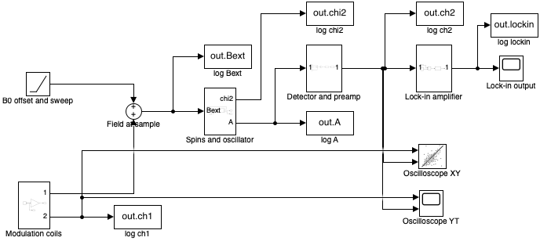
nmr_marginal_osc.slx.
build_nmr_model.m builds the whole diagram from code using add_block/add_line. It then groups blocks with Simulink.BlockDiagram.createSubsystem and tidies the layout with arrangeSystem. Because the build is scripted, the .slx can always be regenerated from text, which suits version control. Signal flow:
| Subsystem / block | Contents | Physical counterpart |
|---|---|---|
| B0 offset and sweep | Ramp: X0 = P.Boff, slope = P.sweep |
magnet supply |
| Modulation coils | Sine Wave (field, T) → Gain \(R_\text{sense}/k_\text{coil}\) |
Helmholtz pair + 1 Ω sense resistor → CH1 |
| Field at sample | Sum |
total \(B_\text{ext}\) |
| Spins and oscillator | MATLAB Function + vector Integrator |
sample + Hartley tank |
| Detector and preamp | noise, −A0, gain 20, two-pole LPF, \(s/(s+2\pi f_{hp})\) |
diode detector + audio preamp → CH2 |
| Lock-in amplifier | reference Sine Wave, Product, two-pole LPF |
lock-in |
| Sinks | Scope (YT), XY Graph, Scope, six To Workspace |
instruments + logging |
5.3 The core: spins and oscillator subsystem
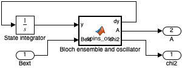
All \(3N+1 = 304\) states are in one vector Integrator, with InitialCondition = P.y0. A MATLAB Function block computes the derivative of the whole vector. This is the usual Simulink pattern for a large ODE system written as vectorised code. The MATLAB Function block has no state of its own, so the solver treats it like any other continuous system:
function [dy, A, chi2] = spins_osc(y, Bext, P)
% Rotating-frame Bloch equations for an isochromat ensemble, coupled to
% the averaged amplitude A of a marginal oscillator.
N = numel(P.dB);
Mx = y(1:N); My = y(N+1:2*N); Mz = y(2*N+1:3*N);
A = max(y(end), 1e-9);
D = P.gamma*(P.Bres + Bext + P.dB) - P.w0; % offsets, rad/s
w1 = P.gamma*P.kB1*A; % RF nutation rate
dMx = D.*My - Mx/P.T2;
dMy = -D.*Mx + w1*Mz - My/P.T2;
dMz = -w1*My - (Mz - 1)/P.T1;
chi2 = P.chi0*P.Bres*(P.wiso'*My)/(2*P.kB1*A); % absorption chi''
dA = (P.w0/(2*P.Q0))*(P.eps - (A/P.As)^2)*A - (P.w0/2)*P.eta*chi2*A;
dy = [dMx; dMy; dMz; dA];Line by line, against the equations:
Dis \(\Delta_k\) for every isochromat at once (an N×1 vector).Bextis a scalar andP.dBis a vector, so implicit expansion does the rest.dMx,dMy,dMzare Equation 1, using element-wise products.chi2is Equation 2. The ensemble sum \(\sum_k w_k m_{y,k}\) is the inner productP.wiso'*My, and \(B_1\) isP.kB1*A. The \(A\) in \(\omega_1\) cancels the \(1/B_1\), so \(\chi''\) stays finite as the drive goes to zero. Even so,max(A,1e-9)prevents a division by zero if the oscillator stops.dAis Equation 3.
The script sets P as a non-tunable parameter of the function block, not as an input port:
ch = rt.find('-isa','Stateflow.EMChart','Path',[mdl '/Bloch ensemble and oscillator']);
ch.Script = code;
d = ch.find('-isa','Stateflow.Data','Name','P');
d.Scope = 'Parameter'; d.Tunable = false;Simulink then resolves P from the base workspace (where InitFcn creates it) at compile time and treats it as a constant struct. Array sizes are fixed before simulation and the block’s code generation can fold the constants.
5.4 Solver choices
set_param(mdl,'Solver','ode45','StopTime','P.Tstop','MaxStep','P.maxStep', ...
'RelTol','1e-5','PreLoadFcn','nmr_params','InitFcn','nmr_params');- ode45 (an explicit variable-step solver) works because the fastest physical time scale, \(\tau_A = 12.7\) µs, is only about 80 times shorter than \(T_2\). That is mildly stiff, not severely stiff.
- MaxStep is 2 µs in scope mode and 10 µs in lock-in mode. It does two jobs: it stops the solver stepping over the 10 µs samples of the noise source, and it keeps the steps short enough to resolve \(\tau_A\) and the fast-passage dynamics.
- RelTol 1e-5. The dips are a few percent of \(A_0\), so the default 1e-3 would produce visible error.
5.5 Detector, preamp and lock-in in Simulink
Each of these is ordinary linear blocks:
% Preamp: two identical poles at flp, then AC coupling at fhp
'Denominator','conv([1/(2*pi*P.flp) 1],[1/(2*pi*P.flp) 1])'
'Numerator','[1 0]', 'Denominator','[1 2*pi*P.fhp]'
% Lock-in: reference 2*sin(w_m t - phi), mixer, two-pole LPF with tau per pole
'Amplitude','2', 'Frequency','2*pi*P.fm', 'Phase','-P.phi'
'Denominator','conv([P.tau 1],[P.tau 1])'The factor 2 in the reference amplitude makes the DC output of the mixer equal to the amplitude of the in-phase component.
5.6 The stand-alone script: nmr_marginal_osc_sim.m
The script is an independent check that uses only base MATLAB:
Integrator. A hand-written fixed-step RK4 (
run_sim/deriv) withdt= 1 µs (scope) or 5 µs (lock-in), on the same state vector and the same derivative function as the model.Isochromats. 201 in scope mode and 101 in lock-in mode (
set_isochromats).Post-processing filters. The detector chain runs on the stored envelope after integration. The filters are discrete first-order IIR sections:
function y = lp1(x, fc, dt) a = 1 - exp(-2*pi*fc*dt); y = filter(a, [1, -(1-a)], x, (1-a)*x(1)); endThe initial condition of
filteris set so that the filter starts in steady state atx(1).Short runs. A 2 Hz high-pass filter cannot settle in 40 ms, so for runs under 1 s the script removes the mean instead.
Lock-in. The script computes both quadratures X and Y and rotates them by \(\phi\):
LI = X*cos(phi) - Y*sin(phi). It also computes the expected Voigt absorption line and overlays it.XY phase matching. The phase-matched XY trace passes CH1 through the same two poles as the preamp.
Moving the noise and filters out of the ODE is what makes a fixed-step RK4 practical for the script. The Simulink model integrates them all together.
5.7 Verification: verify_nmr_model.m
The verification script runs all three modes, extracts the key numbers from the logged timeseries, and compares them with the script. Both use the same noise level but different noise sequences.
| Quantity | Script | Simulink | Run time (Simulink) |
|---|---|---|---|
| Max dip, on resonance | 5.79 % | 5.79 % | 0.9 s |
| Max dip, +20 µT offset | 5.91 % | 5.91 % | — |
| Derivative peak-to-peak width | 12.0 µT | 14.4 µT | 2.7 s |
The dips agree to the stated precision. The peak-to-peak width is measured from the noisy maximum and minimum, so it depends on the noise realisation by roughly ±2 µT (see the flat-topped peaks in Figure 12). The model trace is also shifted: its zero crossing is about +2.6 µT from resonance. The lock-in low-pass filter delays by \(2\tau = 40\) ms, and at a sweep rate of 40 µT/s that moves the trace by about 1.6 µT.
6 Results
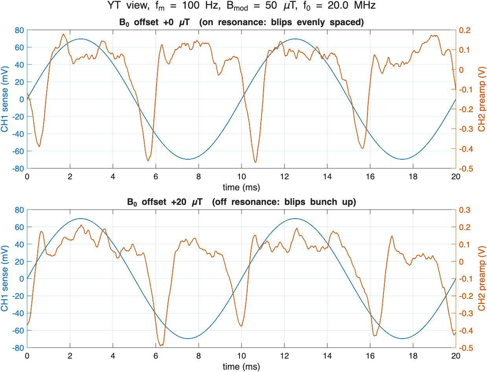
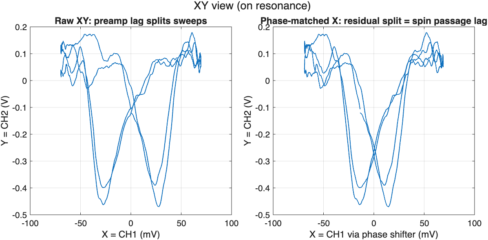
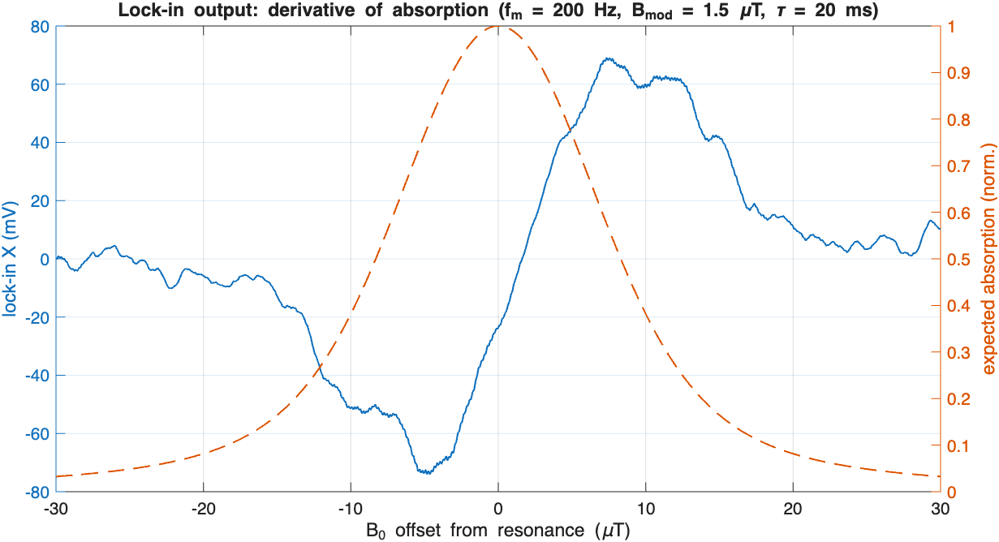
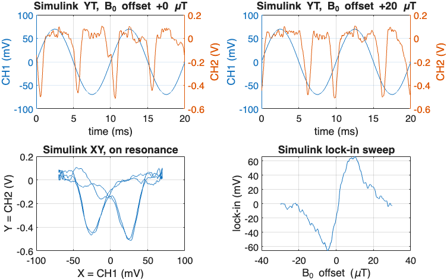
What the figures show:
- YT (Figure 10). The dips reach about −0.45 V at the preamp (about 5.8 % of 0.5 V × 20, after low-pass filtering). Each dip has an overshoot on its trailing edge, which is the passage wiggle. The off-resonance pairing around the negative modulation peak is visible.
- XY (Figure 11). There are two dips because the up and down sweeps reach resonance at different X positions. Phase matching moves them closer together but does not merge them, so the spin lag is a real effect, not just the electronics.
- Lock-in (Figure 12). The output is a clean dispersion-shaped derivative with a signal-to-noise ratio of several tens. The extrema sit near the inflection points of the dashed absorption curve.
7 Model assumptions and limitations
- Fixed oscillator frequency. The dispersion \(\chi'\) would pull the frequency by about \(\eta\chi'_\text{pk}\omega_0/2\approx 1\) kHz. In a real oscillator the frequency follows the tank, so this would slightly change \(\Delta\) and add some FM. Neither effect is modelled.
- Ideal cubic amplitude limiting. Real gate-leak limiting has its own time constant (\(R_gC_g\)), which adds a slow pole to the amplitude loop and can cause squegging if it is too long.
- Ideal envelope detector. The model does not include the diode’s square law or its threshold.
- Simple noise model. The noise is white and added at the detector. The real noise of a marginal oscillator includes amplitude noise that grows as \(\varepsilon\to0\), plus 1/f noise.
- Constant B1-to-amplitude ratio. \(k_{B1}\) is fixed, so the coil geometry and filling factor are folded into one constant.
- Discrete isochromats. A finite set of isochromats at fixed offsets produces artificial rephasing echoes at times \(\sim 2\pi/(\gamma\,\delta B_\text{step})\). With 101 points over ±20 µT, \(\delta B_\text{step}\) = 0.4 µT, so the echoes appear at about 60 ms. That is longer than one passage but within the lock-in sweep. They are suppressed because each isochromat also decays with \(T_2\) = 1 ms.
8 Appendix: parts list (RS Components UK)
These parts were looked up on uk.rs-online.com on 3 November 2026. Prices are ex VAT in GBP, for the RS pack size. The same data is in bom_rs_uk.csv. Values follow Figure 2, Figure 3 and Figure 7.
| Ref | Function | Value | Mfr part | RS no. | Pack | Pack £ | Notes |
|---|---|---|---|---|---|---|---|
| Q1 | Oscillator JFET | J310, SOT-23 | onsemi MMBFJ310LT1G | 773-7813 | 10 | 1.06 | SMD only; alt. TO-92 J113 (806-1766) |
| Ct | Tank trimmer | 5–60 pF PTFE | Vishay BFC280908003 | 038-1419 | 5 | 60.60 | only in-stock trimmer |
| Cp | Tank padder | 47 pF C0G | KEMET C322C470J2G5TA | 538-1528 | 5 | 1.62 | |
| Cg | Gate coupling | 100 pF C0G | Vishay K101J15C0GF5TH5 | 852-3217 | 1 | 0.18 | |
| Rg, R1 | Gate leak, detector return | 100 kΩ 1 % | Vishay MRS25000C1003FCT00 | 683-2923 | 25 | 2.18 | need 2 |
| RS | Marginality | 1 kΩ 25-turn | Bourns 3296Y-1-102LF | 522-0063 | 1 | 1.53 | |
| Cb | Bypass / decoupling | 100 nF X7R | KEMET C322C104K5R5TA | 538-1433 | 5 | 3.27 | need 3 |
| — | Supply reservoir | 10 µF 25 V | Panasonic EEAFC1E100 | 449-1006 | 5 | 1.39 | |
| Cc | Detector coupling | 10 pF C0G | KEMET C315C100J5G5TA | 146-3557 | 20 | 2.56 | |
| D1 | Detector diode | Schottky | ST BAT43 | 251-3025 | 10 | 0.45 | last stock; alt. BAT85S-TR (180-8714) |
| Cf | Detector filter | 1 nF C0G | KEMET C322C102J2G5TA | 538-1382 | 5 | 1.99 | |
| Rf | Detector load | 47 kΩ 1 % | TE LR1F47K | 014-8893 | 10 | 0.50 | |
| U1 | Preamp op-amp | NE5532P | TI NE5532P | 197-7391 | 10 | 4.31 | ±12 V |
| Cin | AC coupling | 10 µF bipolar | Panasonic ECEA1EN100U | 176-3783 | 25 | 3.18 | |
| Rin | Input bias | 8.2 kΩ 1 % | TE LR1F8K2 | 014-8714 | 10 | 0.96 | |
| Rg (pre) | Gain set | 1 kΩ 1 % | TE LR1F1K0 | 125-1159 | 20 | 1.54 | need 2 |
| Rf (pre) | Feedback | 18 kΩ 1 % | TE LR1F18K | 014-8792 | 10 | 0.62 | + 1 kΩ in series = 19 kΩ |
| Cf (pre) | 1st pole | 8.2 nF PP | KEMET R75TI182050H3J | 212-6779 | 10 | 2.99 | 1.6 kV part, large |
| R2 | 2nd pole | 1.6 kΩ 1 % | TE LR1F1K6 | 014-8556 | 10 | 0.76 | |
| C2 | 2nd pole | 100 nF film | WIMA MKS2D031001A00KI00 | 108-2700 | 5 | 2.50 | |
| U3 | Coil driver op-amp | NE5532P | TI NE5532P | 197-7391 | — | — | from U1 pack |
| Q2 | Driver push-pull (NPN) | BD139 | ST BD139 | 168-6075 | 50 | 11.40 | needs small heatsink |
| Q3 | Driver push-pull (PNP) | BD140 | ST BD140 | 168-6074 | 50 | 12.20 | needs small heatsink |
| Ra, Rb | Driver summing inputs | 10 kΩ 1 % | TE LR1F10K | 125-1164 | 20 | 1.50 | need 2 |
| Rc, Rfb | Driver gain, feedback | 1 kΩ 1 % | TE LR1F1K0 | 125-1159 | — | — | from 1 kΩ pack |
| Cc (drv) | Driver compensation | 1 nF C0G | KEMET C322C102J2G5TA | 538-1382 | — | — | from 1 nF pack |
| Rsense | CH1 sense | 1 Ω 1 % 1 W | Vishay CPF11R0000FKE14 | 830-6937 | 1 | 6.13 | |
| — | Sample + Helmholtz coils | 0.56 mm Cu, 200 m | RS PRO | 035-7750 | 1 | 25.68 |
Notes:
- Coil driver dissipation. At 70 mA peak modulation the transistors run cool. Holding a DC offset of about 150 mA dissipates up to 1.8 W in one device, so fit clip-on SOT-32/TO-126 heatsinks.
- Mounting the J310. At 20 MHz it is normal to build “dead-bug” style on bare copper-clad board, so the SOT-23 package is not a problem. Keep the gate and tap leads short.
- Not stocked at RS (or not affordable there).
- The NdFeB Ø50 × 15 mm discs: try specialist UK magnet suppliers.
- Mild-steel bar for the yoke and the soft-iron pole caps: a metal stockholder or a machine shop.
- A DC Hall gaussmeter. RS’s RS PRO “gaussmeter” (106-5309) is a 30–300 Hz EMF meter that reads to 200 µT, so it is useless here, and the Hirst instruments cost more than £1 300. A low-cost Hall-probe teslameter with a 0–2 T range from a general supplier is sufficient, or skip it and search for the line with the trimmer.
- Not included. A ±12 V supply, copper-clad board, BNC connectors, an enclosure, the CuSO4-doped water sample, and the test instruments (two-channel waveform generator, oscilloscope, frequency counter, and optionally a lock-in).
9 Reproducing the results
The MATLAB scripts, the Simulink model, the circuit sources and the parts list are in src/nmr_hartley in this blog’s repository. The finite-difference results file magnet_design_results.mat (about 350 MB) is not included; magnet_design regenerates it.
cd nmr_hartley
nmr_marginal_osc_sim % script: prints a summary, writes fig1–fig3
build_nmr_model % regenerate nmr_marginal_osc.slx (optional)
verify_nmr_model % runs all modes, writes simulink_check.png, model_*.png
render_setup_3d % 3D set-up renders: setup_3d_overview.png, setup_3d_gap.png
magnet_design % 3D field calculation: magnet_design.png, magnet_design_results.mat (~6 min)To rebuild the circuit diagrams (needs pdflatex with circuitikz, plus pdf2svg):
circuits/build.sh # circuits/*.tex -> .pdf + .svg